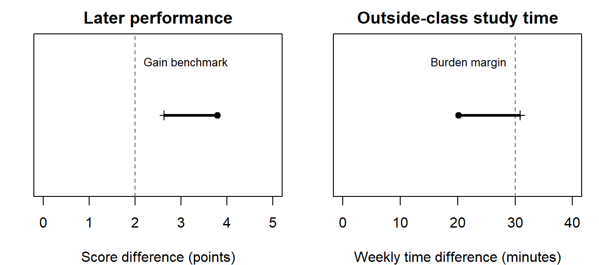
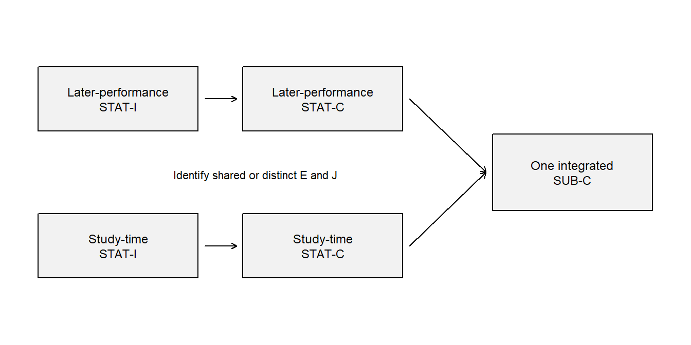
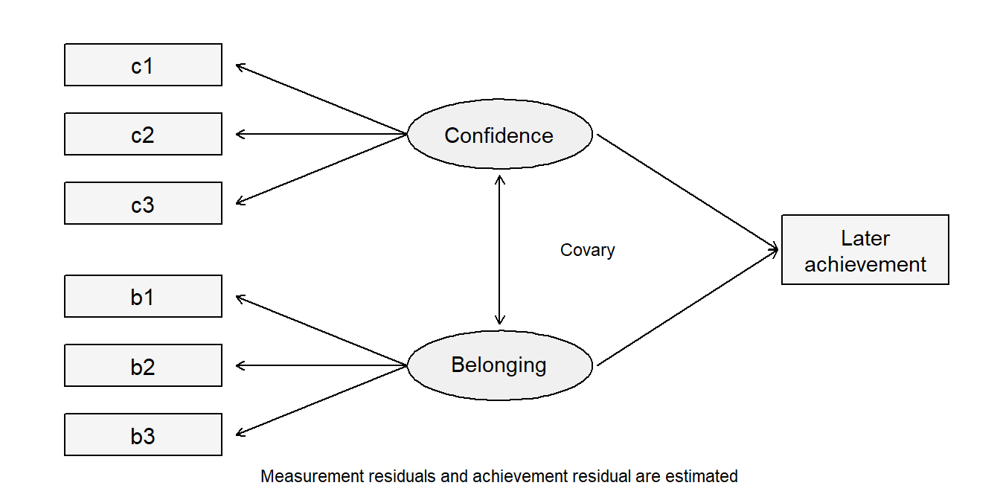
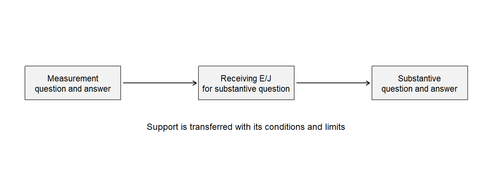

Extending the Argument-Based Approach to Quantitative Studies
Argument Chapter B
NoteChapter overview
One research question can need several statistical answers before its substantive answer is justified. A study can also owe several separately reportable answers whose support depends on one another. This chapter teaches how to distinguish these arrangements, read their supporting records, evaluate their conclusions, and coordinate construction and revision. An invented feedback study and an invented confidence-and-belonging study develop the ideas. Historical occupation records and a published working-from-home experiment provide transfers.
A report may contain a dozen models but answer only one question. Another may fit a single model while answering two questions that have different evidential obligations. Counting models, coefficients or significant tests therefore gives little guidance about the structure of the study. Start with what the report promises to answer, and ask which results that answer actually needs.
The examples supply the study information and explain the selected output locally. Familiarity with regression and intervals helps, but the reading tasks do not require completing every earlier chapter or fitting a factor or mixed model. Full method instruction has a different purpose: here the task is to understand what a result contributes and what its conditions allow a researcher to say. Calculated values are rounded to four decimals, dropping unnecessary trailing zeros; software or intermediate rounding can produce small differences.
Recognizing Separate Questions and Statistical Strands
Begin with the answer owed
An argument connects a question to its bounded answer through evidence, justification and inference. Evidence is the information used; justification comprises the reasons and conditions offered for using it; inference is the analytical and interpretive work; the claim is the resulting answer with its limits. Each question-answer pair has one argument with linked statistical and substantive layers. The statistical layer concerns quantities, models and uncertainty. The substantive layer concerns what those quantities mean in the study’s setting.
For example, a mean difference is a statistical result. Reading it as a worthwhile change in retained learning also needs information about the assessment, its timing and a defensible benchmark. Neither layer substitutes for the other. A calculation can be correct while the interpretation reaches beyond the measured outcome, and a compelling educational question can remain unanswered because its uncertainty is large.
| Arrangement | What the report promises | What the reader follows |
|---|---|---|
| Independent questions | Separate answers whose support does not depend on one another | Each question’s argument |
| One integrated question | One answer that jointly requires distinct estimands, such as worthwhile learning with acceptable time burden | Several statistical strands within one argument |
| Coordinated questions | Separately owed answers, with support or qualifications passed between them | Each argument and the dependency between answers |
A statistical strand is an estimand-specific statistical chain inside one argument. Two strands arise when sibling estimands are jointly required for one integrated substantive answer; each has its own inference and conclusion. Several estimators or sensitivity checks for the same target can remain within one strand. Conversely, two outcomes become separate arguments when the report promises a separate substantive answer for each.
Suppose a college asks, “Does this feedback format produce worthwhile sustained learning without an unacceptable increase in students’ study time?” The performance and time comparisons jointly serve that one answer. If the college instead commissions a learning-effect report and a separate workload report, two answers are owed. The data may be identical; the question-answer contract differs. A reader should identify when this organization is supplied by the report and when it is the reader’s proposed reconstruction of an unclear report.
Reading One Complex Argument with Multiple Statistical Strands
A declared joint question
The following extension is invented. Its setting has 480 eligible students in 24 classes, with 20 students per class. Twelve classes receive explanatory feedback and twelve receive the comparison format, allocated across the full class pool. This is class assignment, not individual assignment or paired assignment within schools. Classes are treated as independent; no additional school grouping is stipulated. The assignment-effect interpretation invokes consistent implementation and no relevant spillovers between classes; actual attendance would be a different exposure. Repeated scores from the same student and scores from students in the same class remain dependent.
The six-week program has an assessment two weeks after it ends and another twelve weeks after it ends. Students record time spent studying outside scheduled instruction during the program. The burden outcome is their average weekly minutes across those six weeks. It is neither teacher workload nor all time spent in education.
The earlier supplied feedback report concerned its two-week assessment and stipulated an estimate of 2.5 with interval [1, 4]. The new generated records below are a separate teaching realization of the extended design. They do not reproduce that earlier fitted result. Its original answer remains attached to its original occasion and report.
| Protocol item | Prospective commitment in this invented extension |
|---|---|
| Question | Does assignment improve twelve-week performance by more than 2 points while increasing weekly outside-class study time by less than 30 minutes? |
| Targets | Average assignment effects on the named twelve-week assessment and on weekly study time for these eligible students |
| Benchmarks | Teachers judge 2 assessment points educationally worthwhile; a student panel judges an additional half-hour per week the largest acceptable burden in this setting. These are stipulated local reasons, not universal cutoffs. |
| Weighting | Each eligible student receives equal weight; the equal class sizes also make equal-class and equal-student target weighting agree. |
| Success rule | Both benchmark conditions must receive the declared directional support. Failure to establish one leaves overall success unresolved. |
| Production | Preserve the allocation record, score rubric, assessment times, time-log instructions, completeness accounting and model/check record. |
The model is chosen to represent the question and dependence, rather than to make every recorded variable a predictor. For student \(i\) in class \(j\) at occasion \(t\), let \(G_j=1\) denote explanatory feedback, \(L_t=1\) denote the twelve-week occasion, and \(B_{ij}\) denote a centered baseline score. The working model is
\[ Y_{ijt}=\beta_0+\beta_B B_{ij}+\beta_G G_j+\beta_L L_t+ \beta_{GL}G_jL_t+u_j+v_{ij}+\varepsilon_{ijt}. \]
Here \(u_j\) is a class deviation, \(v_{ij}\) a student deviation shared across occasions, and \(\varepsilon_{ijt}\) an occasion-specific deviation. The supplied fit uses independent, mean-zero Normal random intercepts and residuals, with common variances for each component, and restricted maximum likelihood for the variance components. These are working conditions, not facts proved by a diagram or by software convergence. Baseline adjustment is included for precision; it does not create the randomized assignment.
The assignment contrast at twelve weeks is \(\theta_Y=\beta_G+\beta_{GL}\). With no assignment-by-baseline interaction and mean-zero random effects, that fixed contrast also gives the model’s marginal assignment contrast for the declared weighting. The interaction coefficient by itself asks how the assignment contrast changes between the two occasions. It is not the twelve-week effect. Two occasions also do not identify an unrestricted growth trajectory.
Read the supplied results
The generated complete-data fit gives \(\widehat\beta_G=2.4793\) and \(\widehat\beta_{GL}=1.3093\). Their sum, calculated before rounding, is a twelve-week contrast of 3.7886 points. Its SE uses their covariance; adding the two coefficient SEs would be incorrect. Burden is analyzed through the 24 class means, comparing twelve classes with twelve classes. This avoids treating 480 students as independent assignment units.
| Strand | Estimate | SE | Directional 95% bound | Benchmark reading |
|---|---|---|---|---|
| Twelve-week score difference | 3.7886 | 0.6756 | Lower bound 2.6285 points | Clears the 2-point gain benchmark |
| Weekly study-time difference | 20.2128 | 6.2245 | Upper bound 30.9011 minutes | Does not establish an increase below 30 minutes |
The bounds use a \(t\) reference with 22 class degrees of freedom. For the mixed-model contrast this is a declared approximate class-level calibration; for the equal-variance comparison of independent class means it is the usual reference. The lower gain bound and upper time bound answer different directional questions. Both must pass for the joint success claim. This is an intersection-union decision: when at least one benchmark condition is false, declaring success requires incorrectly passing that condition’s test. Subject to the calibrations, the overall false-success probability is therefore at most .05. The two marginal bounds are not being presented as a 95% simultaneous confidence region.
The time estimate is below 30, but the uncertainty extends above it. A test against zero would ask whether there is any change in time. That is a different question from whether the increase stays below the acceptable margin. Equally, failing to establish acceptability does not establish that the program is too burdensome.
A calibrated answer is: the model-based evidence supports a worthwhile twelve-week performance gain, while the acceptable-burden condition remains unresolved; the declared joint success criterion is not established. The findings are useful precisely because they identify the unresolved part. Calling the program successful merely because its learning p-value is small would discard one of the promised obligations.
Trace how the strands contribute

| Function | Shared support and strand-specific work | Documentary location |
|---|---|---|
| Statistical evidence | Allocation, class and student identifiers; scores at named occasions; separately recorded time logs | Protocol and records described above |
| Statistical justification | Assignment supports causal comparison; the working dependence and missingness conditions support the estimators and bounds | Allocation procedure and model paragraph |
| Statistical inference | Fit the repeated-score model, form the later contrast with covariance, compare class-average time and compute the declared directional bounds | Equation and results table |
| Statistical claims | Gain exceeds its benchmark under the model; acceptable burden remains unresolved | Benchmark column and interpretation |
| Substantive evidence and justification | The assessment measures the intended course performance; outside-class minutes express the chosen burden; local reasons support the two benchmarks | Rubric, log instructions and protocol |
| Substantive inference and claim | Interpret the two comparisons together, retain the time uncertainty, and stop at the declared students, outcomes and occasion | Calibrated answer above |
The table locates the promised supporting documents; their adequacy still requires examination. A rubric would need evidence for its score interpretation, and a time log could miss unrecorded studying. A small model residual does not verify either measurement. The generated residuals illustrate a calculation, not empirical evidence that a real educational intervention satisfies these conditions.
A focused missingness sensitivity
Now change the record: suppose the last two listed students in each class lack the twelve-week assessment. This is an invented missingness scenario, with 48 missing outcomes and 432 observed outcomes. It does not alter the original target of all 480 eligible students. For a transparent sensitivity calculation, fill each missing value first with its observed class mean. Then lower the missing feedback students’ values by \(\delta\) points while leaving the comparison reference values unchanged.
The reference is a within-class completion scenario, not a claim that missing scores equal those means. Class weighting is preserved, and only the hypothesized unobserved feedback outcomes change. Because 10% of feedback outcomes are missing, the resulting unadjusted assignment difference changes by \(0.1\delta\):
\[ \widehat\Delta(\delta)=3.9992-0.1\delta, \]
where calculations use the unrounded reference difference. This is a point-estimate sensitivity for the class-weighted completed outcome, not a re-estimated mixed-model confidence interval. A proper inferential missing-data analysis must also account for imputation uncertainty and the dependence structure (Little & Rubin, 2019; National Research Council, 2010).
| Assumed shortfall among missing feedback students, \(\delta\) | Completed-data difference |
|---|---|
| 0 | 3.9992 |
| 5 | 3.4992 |
| 10 | 2.9992 |
| 15 | 2.4992 |
| 20 | 1.9992 |
The point comparison reaches 2 at a shortfall of 19.9916 points. This is a tipping point for that particular sensitivity estimand and completion rule. Whether such a shortfall is plausible needs reasons about absence and the assessment scale. It is not a test that establishes the missingness mechanism, and it cannot resolve the original time-burden uncertainty.
Predict and explain. If the assumed shortfall doubled from 5 to 10 while the observed data remained fixed, the completed difference would fall by 0.5 points. The change comes from an assumption about the missing tenth of the feedback group. A correct answer names that source, rather than saying that the treatment suddenly became less effective in the observed records.
Reading Coordinated Questions and Their Dependencies
A measurement answer and a substantive answer
A second invented study observes 400 students in one educational setting. It records three continuously scored indicators of learning confidence and three of belonging at entry, followed by an achievement score at the end of term. These are separate generated participants, not an undocumented extension of the feedback sample. The six indicators are invented measurement summaries, not a validated questionnaire.
The investigators promise two answers. First, does a proposed two-factor representation provide a defensible summary of the six indicators in this setting? Second, how do those two factors relate to later achievement under a joint model? The first supplies part of the support the second needs, but the second still requires achievement measurement, timing, model form and substantive reasoning of its own.
| Recorded indicator | Intended meaning in the invented instrument | Model assignment |
|---|---|---|
| c1 | Confidence in explaining a solution | Confidence factor |
| c2 | Confidence in attempting unfamiliar work | Confidence factor |
| c3 | Confidence in recovering after an error | Confidence factor |
| b1 | Feeling accepted in the learning group | Belonging factor |
| b2 | Feeling able to seek help | Belonging factor |
| b3 | Feeling part of the class | Belonging factor |
A confirmatory factor model represents each indicator as an intercept plus a loading times its assigned factor plus a measurement residual. A loading expresses how an indicator varies with the factor. The model allows the two factors to covary, assigns each indicator to its named factor, and fixes residual covariances to zero. These restrictions have substantive implications: for example, shared wording might create residual association not represented by the two factors.
The first loading of each factor is fixed to 1 to define its unit; factor means are fixed to zero in this single-group model. Other loadings and factor variances are estimated. A one-unit change in a factor is therefore expressed on its marker indicator’s scale, not automatically one standard deviation. Scale setting makes the model interpretable and identified under its other conditions. It is not evidence that the first indicator is perfectly reliable.

The factor-to-indicator arrows represent the measurement loadings. Adding the two arrows to later achievement retains that measurement representation while asking a new question. Residual variation remains in every indicator and in achievement; the diagram is a model specification, not evidence of causal direction.
Read a fit result without turning it into a certificate
The six-indicator two-factor model is fitted by maximum likelihood with a mean structure. It has 8 degrees of freedom and gives \(\chi^2=8.4265\), \(p=.393\), CFI = 0.9996, RMSEA = 0.0115 and SRMR = 0.0158. The CFI compares with a baseline model, RMSEA summarizes discrepancy per degree of freedom, and SRMR summarizes standardized residual discrepancies. The small discrepancies are compatible with this deliberately generated process; they do not establish the validity of a real confidence or belonging interpretation (Bollen, 1989; Kane, 2013).
Two separate three-indicator one-factor models would each be just identified under their usual unconstrained covariance specification. Perfect global fit there would test no covariance restriction. The joint two-factor model here has testable restrictions. A reader should therefore ask what the reported fit actually tests before treating a favorable index as evidence.
| Statement in a model report | Function to identify | What evaluation still asks |
|---|---|---|
| “The loading of c1 is fixed to 1.” | Implemented scale constraint in statistical Inference | Does the model have adequate identification and a clear unit? |
| “A scale must be set because factor units are otherwise arbitrary.” | Justification for the scale constraint | Does that reason apply to this specification? |
| “We compare a model with two loadings equal against the less restricted model.” | A tested restriction and comparison in Inference | Is the comparison eligible, and what does equality mean on these scales? |
| “The fit is acceptable, so both constructs are measured without error.” | A substantive claim based on the fit | The conclusion is too strong: the model explicitly includes measurement error and does not establish construct meaning alone. |
Follow support into the later-achievement model
The substantive model retains the six-indicator measurement structure and adds
\[ Y_i=\alpha+\gamma_C\eta_{Ci}+\gamma_B\eta_{Bi}+\zeta_i, \]
where \(\eta_C\) and \(\eta_B\) denote the confidence and belonging factors, \(Y\) is later achievement and \(\zeta\) its remaining variation. The coefficients compare expected achievement at the same value of the other factor under the model. They are associations: neither confidence nor belonging was randomly assigned, and temporal order alone does not remove confounding.
| Conditional association | Estimate | SE | Model-based 95% interval |
|---|---|---|---|
| Confidence, holding belonging fixed | 3.1068 | 0.5152 | [2.0971, 4.1166] |
| Belonging, holding confidence fixed | 1.9208 | 0.5061 | [0.9289, 2.9127] |
These unstandardized coefficients use the marker scales defined above. Their standard errors arise from joint estimation of the measurement and regression parameters. Treating estimated factor scores as perfectly measured predictors in a second ordinary regression would be a different analysis, with different uncertainty and potentially different targets. A dependency in the argument does not require fitting its models in separate chronological steps.

The measurement answer supports how the later question represents its explanatory variables, and supplies reasons for interpreting the estimated relations as involving confidence and belonging. It does not supply a randomization argument or a verified causal mechanism. The substantive conclusion remains conditional on the measurement specification, association model, selection and timing of the observed students.
A qualification can have a selective consequence
Suppose the instrument has been examined within each of two programs, but equality of item intercepts across programs remains unresolved. A within-program association can still be examined under its own supported measurement model. A claim that one program has a higher latent confidence mean requires additional comparability information. It should not inherit approval from an adequate within-program model. Equally, the unresolved mean comparison is not a reason to reject every within-program association.
Now suppose a residual association between two similarly worded confidence indicators is substantively justified and added to the model. Refit the measurement and substantive model, then trace which estimates and claims change. An unchanged later-achievement conclusion might survive the sensitivity; a changed conclusion needs revision. The arrow transfers conditions as well as support.
This logic also helps with indirect effects. A significant overall treatment effect is not a general prerequisite for asking about an indirect effect. However, randomizing treatment does not by itself randomize a mediator or establish the mediator-outcome comparison. Likewise, moderation asks how a specified association or effect varies; it does not establish the mechanism responsible for that variation. The questions and their design support, rather than a ritual sequence of significant tests, determine what must be justified.
Evaluating Answers and Their Cross-Question Coherence
Judge the answer actually offered
Reading identifies the evidence, reasons, analytical steps and claims. Evaluation then asks whether they support the answer. The six question-level checks are Question alignment, Evidence integrity, Justification adequacy, Inferential adequacy, Transition fidelity, and Claim calibration. Each receives a reasoned judgment: adequate for this purpose, needs revision, insufficient information to judge, or not applicable. These are judgments about particular functions, not scores to total.
A whole argument can then be supported as stated, supported only after narrowing or revision, not supported, or not assessable from the accessible record. An explicitly unresolved answer can be supported as stated. A study need not produce a decisive positive result to complete its question honestly.
For the feedback case, the statement that gain clears its benchmark while burden remains unresolved matches the supplied evidence and conditions. The stronger claim that the declared joint success criterion has been met does not. The originating problem is an unjustified transition from the time estimate to its acceptability, with consequences for the integrated claim. Penalizing the same mistake under several labels adds little to this diagnosis.
For the measurement study, a supported single-setting interpretation cannot silently become a cross-program mean comparison. That limitation passes to the particular later question requiring cross-program comparability. If a report promises both answers, add Cross-question coherence: does their synthesis retain each answer’s target, population, uncertainty and qualifications? This seventh check concerns joining separately owed answers. Multiple strands within one argument still use the six checks.
Consider the offered reason, “Because the SEM fits well, the predictor was effectively randomized.” Reading records an identifiable reason in Justification; evaluation judges it inadequate. Model fit concerns agreement with restrictions on the observed distribution. It does not supply the missing design argument. Recording the reason as absent would conceal the actual error.
Three answers from the same occupation records
The historical Canadian occupation data provide a complete transfer (Fox & Weisberg, 2019). An occupation is the unit, income is in thousand 1971 Canadian dollars, education is average years, prestige comes from an earlier rating survey, and the remaining predictors are percentage of women and three occupation types. Of 102 records, 98 have a recorded type. All three comparisons below retain those same 98 records.
The additive working model regresses income on education, prestige, percentage of women and two type indicators. Its education slope compares expected occupation income at the same values of the other predictors within supported combinations. It is neither an individual return to schooling nor automatically a causal effect. The supplied record is sufficient for the argument task even if these data are unfamiliar.
| Pair and role | Question | Estimand and owed answer |
|---|---|---|
| 1. Contextual description | How does income vary linearly with education across the 98 retained occupations? | The finite-record marginal least-squares slope; a descriptive answer for these records |
| 2. Primary conditional association | How does income differ with education at the same prestige, percentage of women, and type, within support? | The linear conditional-mean coefficient \(\beta_E\) under the declared working model; fitted \(b_E\) is its estimate from the 98 retained records |
| 3. Secondary prediction analysis | Does the full additive learning rule predict eligible same-source occupation records with lower expected absolute error than the education-only rule? | Difference in expected absolute error of the two learning procedures at the declared training sizes; an internal validation answer |
Read the supplied teaching report
R0 – Common record and declared scope. We analyzed the 98 complete occupation records described above. Income was scaled to thousand 1971 Canadian dollars. Education and income were historical occupational averages; prestige came from an earlier rating survey. We retained the same rows for all three questions and make no claim of verified probability sampling or randomized education.
R1 – Marginal answer. Across these records the education-only least-squares slope was 0.883 thousand dollars per year. This is a descriptive linear summary: occupations with more education tended to have higher average income. It is not an individual or causal effect.
R2 – Conditional answer. The intended estimand was the linear conditional-mean education coefficient \(\beta_E\), comparing education at the same prestige, percentage of women, and occupational type. Its fitted estimate was \(b_E=0.1164\), with a classical 95% interval [\(-0.4302\), 0.6631] under the independent linear conditional-mean working model with common variance and the Normal-error reference for the classical interval. HC3 gave [\(-0.6429\), 0.8758]. Influence, functional-form, and support checks limit that model’s interpretation. The direction and practically relevant magnitude remain unresolved under these calculations; the result does not establish no conditional relationship.
R3 – Prediction answer. The two fixed OLS learning rules were compared with the shared ten-fold protocol specified here: a fixed pair of rules, balanced folds from seed 80806, identical rows and units, training sets containing every type with full column rank, and pooled case-level errors. The full rule had MAE 1.5412 versus 2.4031 for education-only, difference \(-0.8619\). The examined resplits all favored the full rule. This is internal evidence about learning procedures trained on 88/89 eligible records under the stated same-source exchangeability assumptions. Lower expected error is a provisional conclusion because new-sample uncertainty is not quantified; this is not external validation of a final 98-record equation.
R4 – Synthesis. Education has a positive marginal linear association with income in these historical records. Its conditional association is imprecisely resolved by the specified additive model, while the full learning rule predicts the held-out records more accurately than the education-only rule. These conclusions answer different questions and do not establish that changing education would change income.
The report is an invented teaching reconstruction of these real records, not a statement about the original investigators’ intentions. Its ten-fold comparison uses two fixed learning rules, common balanced folds, seed 80806, complete training types and pooled case errors. The row count and declared protocol are part of the evidence, not incidental software settings.
| Function | Shared or pair-specific content | Trace in this teaching record |
|---|---|---|
| STAT-E | Named 98 rows, variables, exclusions, and computations’ inputs | R0; the supplied 102-to-98 audit and Chapter 8, Section 1.1 |
| SUB-E | Occupations rather than workers; historical dollars, education, ratings, and types | R0; variable/source descriptions |
| STAT-J | Pair 1: fixed-record least-squares definition. Pair 2: declared stochastic model and uncertainty conditions. Pair 3: held-out fitting, fixed rules, loss, and exchangeability | R1–R3; model and protocol declarations above; Chapter 8, Sections 1–2, and Chapter 13, Section 2 |
| SUB-J | Reasons connecting those measurements and comparisons to historical occupational income, with limits on individual, current, and causal interpretations | R0–R3; unit/time explanations and prediction-opportunity definition |
| STAT-I | Pair 1’s 0.883 slope; Pair 2’s 0.1164 estimate, intervals, coefficient test and checks; Pair 3’s case-level errors, MAEs, and split sensitivity | Supplied results; Chapter 8, Section 4.4, for the model with type (\(M_5\)) that reproduces them; Chapter 9 for the diagnostic and HC3 methods; Chapter 13, Section 2; R1–R3 |
| STAT-C | Descriptive positive marginal slope; unresolved conditional slope under the model; smaller internal error for the full rule under the protocol | R1, R2, and R3 respectively |
| SUB-I | Interpret years, income units, conditioning, and prediction errors in the named historical occupation setting | The supplied unit definitions and held-out errors; R1–R3 |
| SUB-C | Each question-facing answer with its own limits; none supplies a causal or individual-earnings answer | R1–R3; their distinctions preserved in R4 |
R2 explicitly offers independence as a model condition, but R0 does not establish a probability selection process. The dollar translation follows from scaling income by 1,000. These distinctions let a reader identify a stated reason without treating its empirical support as established. The same passage may perform several functions; the table avoids reproducing three nearly identical maps.
Evaluate each answer and its synthesis
| Quality-evaluation question | Application to these arguments |
|---|---|
| Question alignment | R1 matches its finite-record slope. R2 names \(\beta_E\), its fitted estimate, the conditioning set, and the model extension. R3 names the learning procedure, loss, and training sizes rather than substituting a coefficient test. |
| Evidence integrity | The 102-to-98 accounting and common rows are explicit. Missing type still limits what is represented. CV excludes held-out outcomes from fitting; source selection is not repaired by that procedure. |
| Justification adequacy | Least squares is sufficient for the declared finite description. Pair 2’s model conditions and Pair 3’s same-source exchangeability remain assumptions with incomplete empirical support. Statistical computation alone cannot establish them. |
| Inferential adequacy | The slope, intervals, error arithmetic, and comparisons are reproducible. Neither zero-crossing nor a large p-value proves absence; repeated folds are not independent replication. Substantive reasoning must retain those distinctions. |
| Transition fidelity | Occupation-level average income remains occupation-level average income; partial adjustment is not a causal intervention, and model fit is not held-out performance. |
| Claim calibration | R1 remains finite and historical; R2 reports unresolved magnitude/direction rather than no relationship; R3 remains internal and procedure-specific. No claim extends to individual workers or modern populations. |
Each question receives a judgment with a reason: adequate for this purpose, needs revision, insufficient information to judge, or not applicable. The record is adequate, for example, to check Pair 3’s held-out computations, but it gives insufficient information to establish exchangeability with an external population.
Each whole pair then receives its own conclusion:
- Pair 1: supported as stated, as an accurate bounded description of the retained records.
- Pair 2: supported as stated, as the explicitly conditional, unresolved working-model answer about \(\beta_E\) actually reported. This certifies neither the model nor a population relationship, and a claim that the true national conditional slope is zero would not be supported.
- Pair 3: supported as stated, as a qualified internal comparison with its assumptions and limits. External superiority of the final all-record fitted equation is not assessable from the accessible record, and it is not the answer being accepted.
The other whole-pair conclusions are supported only after narrowing or revision, not supported, and not assessable from the accessible record. A correctly reported inconclusive answer can be supported as stated; it is not rejected for failing to answer a stronger question.
Cross-question coherence.
Coordinated questions add one evaluation question, Cross-question coherence: does the synthesis preserve the distinct questions, estimands, methods, priority, analysis timing, uncertainty, and limits of the separate answers? Apply it here after reading and evaluating each of the three answers.
R4 is coherent because it reports three distinct outcomes: a positive marginal slope, an unresolved conditional slope, and better internal prediction can hold together without contradiction. Now consider this alternative:
Once the other predictors were controlled, education had no effect; nevertheless, the significant full regression proves it will predict workers’ incomes accurately.
Reading first identifies the inference and claim it offers. Evaluation then finds three failures: “no effect” substitutes a causal null for the conditional-association answer, an omnibus significance test is not held-out validation, and occupations have become workers. The corrected synthesis is R4, not an overarching fourth argument that erases the separate conclusions.
The distinctions matter: a stated model assumption is identifiable Justification even when its empirical support is incomplete; an explicitly unresolved answer can be reported and supported accurately; and lower internal error does not establish external performance. “Not located” describes the accessible record, not proof that investigators did nothing. A wrong reason remains the offered reason and is then judged inadequate; do not silently replace it with a more defensible one.
Transfer a changed model claim
An argument reading can expose a problem without requiring a complete new methods course. The following small changes each alter a specific link between the reported computation and its interpretation.
| Supplied report or change | What the reader can already decide |
|---|---|
| An ordered outcome has three categories. The report says this ordering guarantees the same predictor slope at both cumulative cutpoints. | Ordering defines the thresholds; a common slope is an additional model restriction. Read its checks and the fitted category probabilities before accepting that interpretation. |
| The same departure from common slopes is easier to detect in a much larger sample. | A smaller p-value can reflect greater precision. Judge the consequences through predicted category probabilities at meaningful predictor values, not through significance alone. |
| Two clinics have equal visit counts, but one was observed for twice as long. | Equal counts are not equal rates. A rate comparison needs the exposure period and its role in the model. |
| A prediction model has a lower internal validation error and a significant treatment coefficient. | These are different answers. Neither establishes external-cohort performance, and internal accuracy does not supply causal identification. |
The first two rows preserve a useful distinction from ordinal regression: an assumption may matter little for one prediction and greatly for another. An adequate argument names the decision-facing contrast and shows the consequence. Requiring a ritual sentence that “assumptions were checked” would reveal much less about the research reasoning.
Coordinating Construction and Revision Across Questions
A complete construction history for the occupation study
The records were collected for earlier purposes. The following chronology is an invented teaching reconstruction of how the three analyses could be planned and completed. It is not a claim that the source investigators registered this plan. Each of the three questions retains its own target and bounded answer.
| Phase and stage | Commitment in the occupation teaching study |
|---|---|
| Understand and plan: 1. Review | Review the historical records, their units and measurements, the source-selection information and plausible uses of an occupation-level analysis. |
| 2. Frame | Pose a finite-record descriptive question, a conditional-association question and a prediction question. Name a candidate answer and its scope for each; a causal effect is not one of these targets. |
| 3. Plan and align prospectively across questions | Fix the common 98 rows and income units. Plan a descriptive least-squares slope for the first question, the additive model and its uncertainty/checks for the second, and the two fixed learning rules, loss, shared folds and training sizes for the third. Align shared evidence without giving the three questions identical justifications. |
| Produce and complete: 4. Produce or acquire and document evidence | Acquire the source records, retain and document the four missing-type exclusions, apply the fixed unit conversion and preserve the source/protocol record. Do not infer a historical probability sample or prospective registration. |
| 5. Estimate, check, and analyse | Fit the declared models; inspect form, influence, spread and support; check the uncertainty under unequal spread; compute predictions without using held-out outcomes in fitting; report sensitivity without relabelling it as a new study. |
| 6. Contextualize, interpret, and complete the bounded answer | Complete each answer, including an unresolved conditional slope and a qualified internal prediction result. A contrary or inconclusive result can complete its question. |
| 7. Give explicit outcomes and synthesize | State the separate outcomes and join them as R4, preserving their units, estimands, uncertainty, analytic history and limits. The synthesis introduces no causal or worker-level claim. |
Iteration stays within a phase. Correcting a coding error under the same question and estimand, or repairing an uncertainty calculation on a justified basis, can reopen production work. A newly preferred outcome, question mode or estimand needs a revised or additional cycle, with its timing and reused evidence stated. This respects the one-way planning-to-production handoff within a cycle; it does not prohibit researchers from asking a new question.
| Point in the teaching reconstruction | Decision and reasoning | Consequence for the questions |
|---|---|---|
| Before the comparison | Declare common rows and units, three questions, model conditions and validation protocol | The questions share evidence while retaining different targets and assumptions. |
| During computation | Discover that income was divided by 100 twice in a copied calculation; restore the declared division by 1,000 | A same-target error repair: recompute affected estimates, errors and dollar statements, then recheck the synthesis. |
| During checks | Unequal spread motivates a disclosed robust-uncertainty sensitivity alongside the classical interval | The coefficient target stays fixed; only the uncertainty calculation changes, and it still needs independent observations. |
| After reading results | Ask whether increasing an individual’s education causes higher earnings | A new question, unit and causal target require a revised or additional cycle and suitable design/evidence. The occupation association cannot be relabelled as that answer. |
| After internal validation | Want a claim about occupations in another country or period | A new deployment target needs evidence for transport or new validation. A new fold allocation of the original records supplies no external outcomes. |
Follow revisions through their dependencies
Correcting a measurement-model coding error retains the question but changes the inputs to its answer. A later SEM using that measurement representation must be refitted and its claim re-evaluated. In contrast, deciding after inspection to compare latent means between programs adds a target with new comparability requirements. It needs a revised or additional planning cycle, not a new label on the original association result.
An explicit decision history makes this distinction visible. A researcher’s final report may be neatly organized even when decisions changed during the work. The reader should locate statements about timing in the protocol, analysis record or disclosed amendments; the final section order is not evidence of prospective planning. “Not located in the accessible record” identifies an information limit. It does not prove that the investigators never considered the issue.
The same principle applies when AI supplies a model, a table or a paragraph. Those products are analytical proposals until their target, data, conditions and interpretation have been checked. An investigator remains responsible for recognizing a changed question, retaining the record of a correction, and revising dependent claims. A polished paragraph that merges incompatible targets can be less trustworthy than a short explicit statement that one answer remains unresolved.
Transferring the Reading to a Published Study
Read the record before borrowing its conclusion
Bloom and colleagues’ Ctrip experiment provides a real published case (Bloom et al., 2015). Eligible volunteers in a Chinese call center were allocated to a nine-month home-working arrangement or office work. Appendix Table A.II records 131 assigned to home working and 118 to the office. The intervention included four home days and one office day per working week. These details define the comparison; they do not automatically describe all remote workers or all possible home-working arrangements.
Two reader-formulated questions will organize this transfer: what happened to performance under the assigned arrangement, and what happened to employee retention? These separately owed answers can inform a shared organizational decision. Retention also affects the later performance record, because an employee who leaves no longer contributes the same subsequent work observations. That connection needs attention when the findings are synthesized.
| Source location | Information to trace | Function in the reading |
|---|---|---|
| Article pp. 169–174 and Appendix Table A.II, p. 214 | Eligibility, volunteered participation, birth-date allocation, and the 131/118 group counts | Evidence about study entry and assignment; support and limits for an assigned-arrangement comparison |
| Table II, column 4 and notes, p. 187 | Logged weekly calls, employee and week fixed effects, employee-clustered uncertainty and the analysis sample | Statistical specification, computation and output |
| Interpretation, p. 188 | The published approximately 13% performance reading | Translation of the fitted log-scale contrast into a substantive statement |
| Figure IX and Section V.B | Leaving employment and its relationship with performance | A separate outcome and a qualification for the evolving performance record |
Author replication files, Tables2014.do, Table 2 block |
Selection conditions and fitting commands for each displayed column | A reproducible trace of the implemented analysis, distinct from its rationale |
The article and author’s research page provide the source and replication links. The following calculations were reproduced from the author-linked data, rather than inferred from the abstract. The original records remain at their source; the displayed summaries suffice for the reading task.
Preserve the analysis denominator and uncertainty
Table II, column 4 concerns 134 order takers with the required call measures, not all 249 randomized employees. Its 9,426 observations are person-weeks across 85 distinct weeks. The analysis excludes the transition week and applies the authors’ outcome-availability and call-count conditions. Employee fixed effects represent stable employee differences, week effects represent common week differences, and the uncertainty is clustered by employee to accommodate within-employee dependence.
The reproduced assignment-by-experiment-period coefficient is 0.1198, with clustered SE 0.025. It matches the paper’s displayed 0.120 (0.025), whose published precision is retained here. Exponentiating the unrounded coefficient gives a 12.7304% relative contrast on the fitted logged scale, consistent with the paper’s rounded approximately 13%. A log-scale coefficient does not by itself establish the same ratio for arithmetic mean calls; that translation also depends on the residual distribution and the target being reported.
The raw retention record has 21 of 131 home-assigned employees leaving, compared with 41 of 118 office-assigned employees: proportions 0.1603 and 0.3475. This is a directly reproduced raw comparison from quit_data.dta; the article’s Section V.B summarizes attrition as 17% and 35%. The file-based home proportion is not an exact reconstruction of that published summary, so the two are kept distinct. It is distinct from the paper’s adjusted probit analyses and supplies no independent estimate of a particular psychological mechanism.
A statistical trace identifies the selected rows, variables, fixed effects, coefficient and cluster calculation. A substantive trace identifies the employees, the home-working arrangement, what call performance represents and the scope of retention. The reason supplied by randomized assignment is different from the implementation of the regression. Treating the fixed effects themselves as proof of randomization would confuse the model with the design.
A short exploratory moderation extension
Now ask a new question: does the log-call assignment contrast differ between the two categories of the replication file’s recorded men indicator, coded 0 for women and 1 for men? This is a teaching reanalysis of the same source data, selected here after the main results. It is exploratory and is not a result being attributed to the original authors. The same selected rows, employee and week effects, and employee-clustered covariance are retained; an assignment-by-experiment-period-by-indicator term allows the contrast to vary. The model also includes the experiment-period-by-indicator term, allowing the groups to have different background changes across the experimental period. The remaining lower-order terms are absorbed by the employee and week effects.
| Recorded group | Fitted log-call assignment contrast | SE | Pointwise 95% interval |
|---|---|---|---|
| Women (0) | 0.1414 | 0.0358 | [0.0706, 0.2122] |
| Men (1) | 0.0994 | 0.0342 | [0.0316, 0.1671] |
Both subgroup intervals exclude zero, yet the estimated difference between contrasts is \(-0.042\) with SE 0.0495. A \(t\) comparison on 133 cluster degrees of freedom leaves its direction unresolved. The subgroup intervals are pointwise, not a simultaneous claim over an unrestricted set of possible probes. The correct comparison uses the covariance of the two estimated contrasts; comparing their separate p-values does not test their difference.
This is effect-pattern description conditional on the design and observation process, not a causal effect of gender or an explanation of why a difference would occur. A mechanism claim would need additional evidence and identification. A resampling sensitivity, if undertaken, would preserve the assignment and dependence units by resampling employees rather than individual weeks. Bootstrapping alone would not supply causal or measurement support.
Evaluate a coherent synthesis
A coherent synthesis can say that the source supports improved call performance under the experimental home-working arrangement for its stated analysis and lower observed departure in the randomized sample, while the teaching reanalysis leaves the contrast difference between recorded groups unresolved. It retains the different denominators, outcomes and analysis histories. It does not turn a later choice to work at home into the original randomized comparison.
The trial’s voluntary eligibility conditions constrain transport to other employees. Outcome availability and attrition constrain interpretation of later performance records. These are places to examine the article’s sensitivity and selection discussion, not automatic reasons to discard every result. They also illustrate why a procedure can reproduce exactly while a stronger causal or generalization claim still needs additional support.
Predict and explain. If the employee count stayed fixed but each person contributed twice as many weeks, a calculation treating all weeks as independent would exaggerate the added independent information. More repeated observations can improve precision, but the change depends on within-person dependence. The research explanation must identify the repeated unit, not just quote the larger row count.
Summary and Reading Bridge
One integrated question can require several estimand-specific statistical strands. Several separately owed answers retain separate arguments, even when one fitted model serves them all. A dependency transfers particular support and its qualifications; it is neither a causal arrow nor a command to perform a ritual sequence of significant tests.
The feedback example shows why a favorable performance result cannot settle an unresolved burden requirement. The measurement example shows why one supported interpretation can inform a later association while leaving a different mean-comparison claim unresolved. The occupation example shows how a positive marginal slope, an unresolved conditional slope and better internal prediction can coexist. The published experiment shows how allocation, repeated outcomes, selected analysis samples and exploratory extensions must retain their own documentary traces.
Reading is the primary task: identify the question, answer and support. Evaluation asks whether that support warrants the answer. Construction uses the same distinctions to plan commitments, document changes and revise dependent claims. Organizing the argument and following reporting across the report are auxiliary reading tasks, not additional components. The framework draws on argument, statistical-reasoning and validation traditions (Kane, 2013; LeMire, 2010; Toulmin, 2003), while the quantitative methods supply the technical detail needed in each setting.
The selected models here are explained sufficiently for the reading. Regression, generalized linear models, prediction and causal design develop their calculations and conditions in the relevant method chapters. Factor and structural models have their full treatment in Part Two. Argument Chapter C will develop the additional measurement layer; understanding this chapter’s supplied results does not require completing that future unit.
Key terms
| Concept group | Term and common alternatives | Meaning or essential distinction | Main explanation |
|---|---|---|---|
| Argument-based reading | Statistical strand | An estimand-specific statistical chain inside one argument. Two strands arise only when sibling estimands are jointly required for one integrated substantive answer; each has its own statistical inference and conclusion. | Arg. B, Sec. 1 |
| Argument-based reading | Coordinated questions | Several question-answer pairs in one study whose support depends on one another. Each answer is read on its own, and their coherence across questions is judged separately. | Arg. B, Sec. 3 |
Evidence, justification, inference and bounded claim retain their shared meanings. The Part One Concept Reference gathers these terms; Argument Chapter A develops the documentary reading of individual components and evaluation questions.
Exercises
Exercise 1: Questions and strands (Foundational)
Three reports use the same classroom data. Report A promises one answer about worthwhile learning without unacceptable time burden. Report B promises separate answers about learning and burden. Report C promises a measurement answer and a later-achievement answer that uses that measurement representation. (1) Identify the arrangement in each report and explain why the number of fitted models does not settle it. (2) Report A adds a second estimator for its same learning target. Does this necessarily create another strand? (3) Name one piece of allocation information that A’s two strands share, and one measurement issue they do not share.
Exercise 2: Read the integrated answer (Foundational)
An invented feedback study assigns twelve of 24 classes to each format, with 20 students per class and repeated scores. Its later-performance contrast is 3.7886 points, with one-sided 95% lower bound 2.6285. Its weekly study-time contrast is 20.2128 minutes, with one-sided 95% upper bound 30.9011. The declared success rule requires gain greater than 2 points and extra time below 30 minutes. (1) Read each strand and give the integrated answer. (2) Explain why a test of time difference against zero would answer the wrong burden question. (3) In a separate invented language record, two learners score 58, 65, 68, 76 and 62, 63, 67, 68 at four equally spaced occasions. Explain why an average gain per interval of 6 or 2 is neither a constant observed slope nor the assignment effect at the last occasion.
Exercise 3: Follow measurement support (Integrative)
A two-factor CFA uses six continuous indicators, three per factor. It fixes one loading per factor to 1 and gives chi-square 8.4265 on 8 degrees of freedom, p = .393. A jointly estimated later-score SEM gives a confidence coefficient 3.1068 with interval [2.0971, 4.1166], holding belonging fixed. The report has not examined item-intercept comparability between programs. (1) Separate the implemented scale constraint, its identification reason, and a test of an eligible equality restriction. (2) State what the measurement answer contributes to the later-score answer and what additional support the latter needs. (3) Explain why these results do not establish that one program has higher latent confidence or that increasing confidence causes achievement to improve.
Exercise 4: Evaluate coordinated answers (Integrative)
On 98 historical occupation records, a report gives a positive marginal education slope 0.883, a conditional slope 0.1164 with interval [-0.4302, 0.6631], and ten-fold mean absolute errors 1.5412 for a full additive rule and 2.4031 for an education-only rule. A summary says, “Education has no effect, but the significant full regression proves accurate prediction of individual workers in a future country.” (1) Identify three changes of target or support in that summary. (2) Write a coherent replacement that retains the unresolved answer. (3) Explain when the six question-level evaluations suffice and when Cross-question coherence is added. (4) A separate supplied student-prediction rule has lower held-out error in its source records, but no later-cohort outcomes are available. What evidence is still needed for a future-cohort performance claim?
Exercise 5: Predict and explain a revision (Integrative)
An occupation-study plan declares income in thousand dollars, a conditional-association question, and two fixed prediction rules. During computation an analyst finds that a copied calculation divided income by 100 twice instead of by 1,000. Later the team asks whether increasing an individual worker’s education causes higher pay. (1) Predict which numerical outputs need rechecking after the scale repair and explain why this is not automatically a new question. (2) Explain why the later causal question needs a revised or additional construction cycle. (3) In a separate SEM, a corrected measurement-model coding error changes a confidence loading. Identify a later answer that must be revisited and one reason its numerical conclusion might nevertheless survive.
Exercise 6: Read the published-study trace (Integrative)
Bloom and colleagues’ working-from-home experiment allocated 131 eligible volunteers to home work and 118 to the office. Table II, column 4 (p. 187), analyzes logged weekly calls from 134 order takers, using 9,426 person-weeks, employee and week fixed effects, and employee-clustered uncertainty. It reports coefficient 0.120 and SE 0.025. A separate teaching reanalysis adds a recorded-group interaction; its two log-call contrasts are 0.1414 and 0.0994, with a direct difference -0.042 and SE 0.0495. (1) Explain the different roles of 249, 134 and 9,426. (2) Identify where to locate the implemented sample restriction and where to locate the published interpretation. (3) Explain why positive separate subgroup contrasts do not establish moderation. (4) Distinguish reading a stated causal reason from evaluating whether it also justifies generalization to all remote workers. The supplied study details are paraphrased from the article and the authors’ replication record; the interaction analysis is exploratory teaching work, not their reported finding.
References
Bloom, N., Liang, J., Roberts, J., & Ying, Z. J. (2015). Does working from home work? Evidence from a Chinese experiment. The Quarterly Journal of Economics, 130(1), 165–218. https://doi.org/10.1093/qje/qju032
Bollen, K. A. (1989). Structural equations with latent variables. Wiley.
Fox, J., & Weisberg, S. (2019). An R companion to applied regression (3rd ed.). SAGE Publications. https://www.john-fox.ca/Companion/index.html
Kane, M. T. (2013). Validating the interpretations and uses of test scores. Journal of Educational Measurement, 50(1), 1–73. https://doi.org/10.1111/jedm.12000
LeMire, S. D. (2010). An argument framework for the application of null hypothesis statistical testing in support of research. Journal of Statistics Education, 18(2), 1–23. https://doi.org/10.1080/10691898.2010.11889492
Little, R. J. A., & Rubin, D. B. (2019). Statistical analysis with missing data (3rd ed.). John Wiley & Sons. https://doi.org/10.1002/9781119482260
National Research Council. (2010). The prevention and treatment of missing data in clinical trials. National Academies Press. https://doi.org/10.17226/12955
Toulmin, S. E. (2003). The uses of argument (Updated). Cambridge University Press. https://doi.org/10.1017/CBO9780511840005